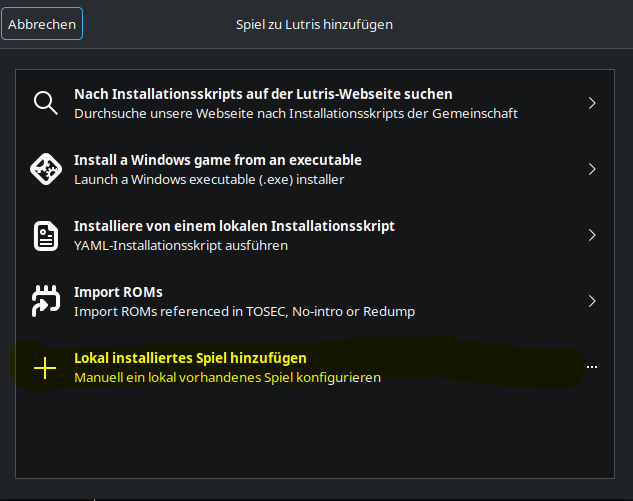
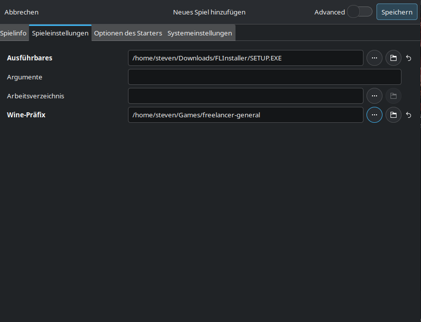
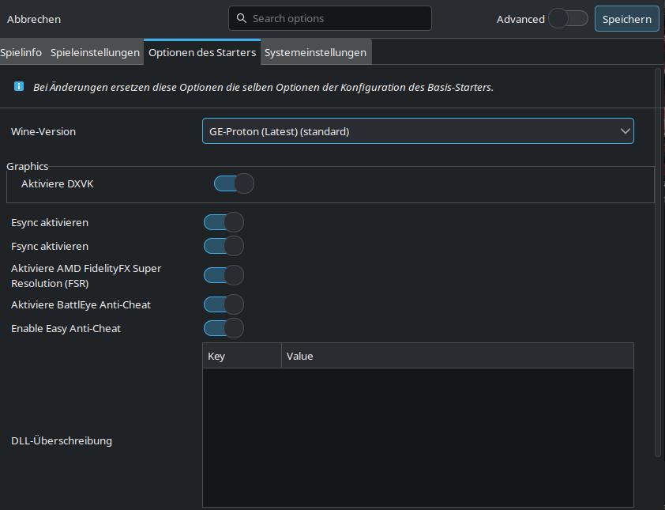
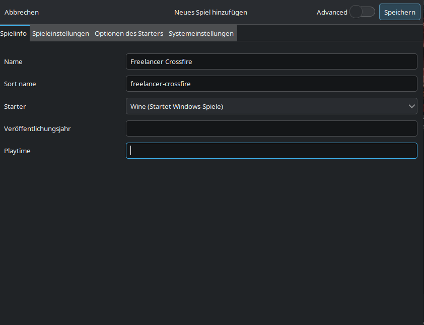
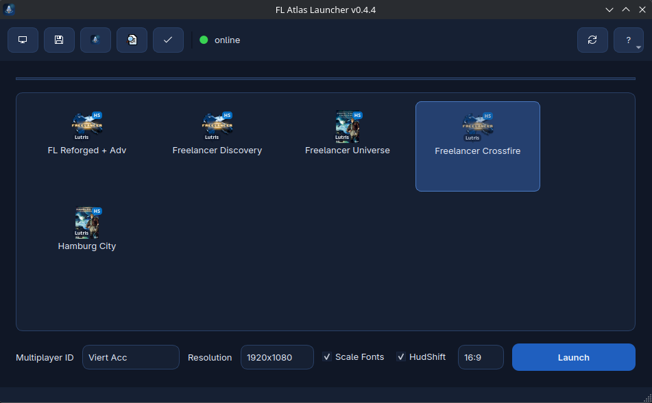
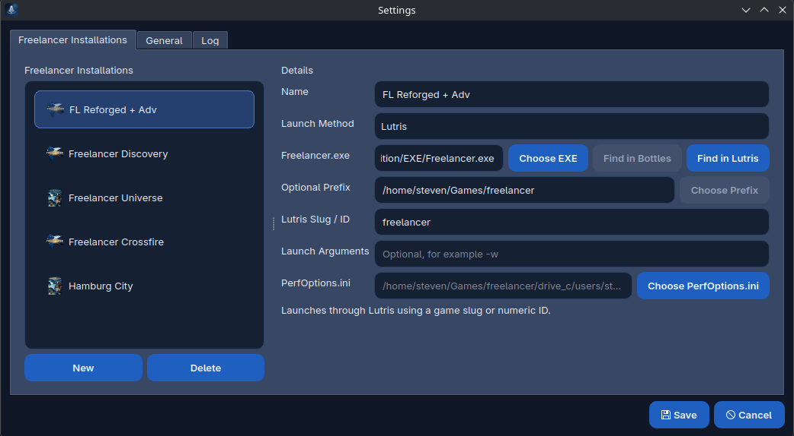

Installation Guide
Installing Freelancer on Linux with Lutris or Bottles
This is a simple setup guide for installing vanilla Freelancer and multiple mods on Linux. The recommended approach is to keep vanilla and every mod in its own separate Lutris prefix or Bottles bottle. That makes updates, saves, and MPID handling much easier.
1. Install a runner
You can use either Lutris or Bottles. Lutris is a very good choice if you want to manage several Freelancer installations side by side. Bottles is a good alternative if you prefer separate self-contained bottles.
1.1 Install Lutris
- Install Lutris using your distribution package manager or the official Lutris installation method.
- Start Lutris once so it can initialize its folders and Wine runners.
- Create a separate game entry for each Freelancer installation you want to maintain, for example one for vanilla, one for Discovery, and one for Crossfire.
- Use a separate Wine prefix for each installation. This keeps registry data, saves, and dependencies isolated.
Detailed todo list for Lutris:
- Open the Lutris website or your distribution software manager and install Lutris.
- Start Lutris and wait until the first-time setup is finished.
- Click the plus button and create a new local game entry.
- Choose Wine as the runner.
- Enter a clear game name such as Freelancer Vanilla, Freelancer Discovery, or Freelancer Crossfire.
- Set the executable to the Freelancer installer first, or later to the final Freelancer EXE after installation.
- Open the runner options and set a dedicated Wine prefix path for this installation.
- Save the entry and start it once so Lutris creates the Wine prefix.
- Run the installation and then update the executable path to the real Freelancer game EXE if necessary.
Examples by distribution:
- Ubuntu / Debian: update package sources, then install Lutris with
sudo apt install lutris. - Fedora: install Lutris with
sudo dnf install lutris. - Arch Linux: install Lutris with
sudo pacman -S lutris.




1.2 Alternative: Install Bottles
- Install Bottles from your distribution source, Flatpak, or your preferred package source.
- Create one Gaming bottle for vanilla Freelancer.
- Create additional bottles for every major mod you want to keep separate.
- Name the bottles clearly so you always know which bottle belongs to which Freelancer installation.
Detailed todo list for Bottles:
- Install Bottles and start it once.
- Create a new bottle and choose the Gaming environment.
- Name the bottle clearly, for example Freelancer Vanilla or Freelancer Discovery.
- Open the bottle and use the option to run an executable.
- Run the Freelancer installer inside that bottle.
- After installation, add or select the correct Freelancer EXE as the launch target.
- Create one separate bottle per major mod or separate installation.
Examples by distribution:
- Ubuntu / Debian: install Flatpak if needed, add Flathub, then install Bottles with
flatpak install flathub com.usebottles.bottles. - Fedora: Flatpak support is usually already available, so install Bottles with
flatpak install flathub com.usebottles.bottles. - Arch Linux: install Bottles from Flathub with
flatpak install flathub com.usebottles.bottles, or use your preferred Arch package source if you already maintain it there.
2. Install vanilla Freelancer
- Create a fresh Lutris prefix or Bottles bottle for vanilla Freelancer.
- Run the original Freelancer installer inside that environment.
- Finish the installation and start the game once to verify that the base installation works.
- After the first successful start, keep this installation as your clean vanilla base.
- If you want, make a backup copy before applying any widescreen patch, HD pack, or mod.
3. Install a mod
- Create a new Lutris entry with a new prefix, or create a new bottle in Bottles.
- Install vanilla Freelancer again inside that new environment, or copy a clean working vanilla installation into it.
- Install the mod into this separate environment.
- Launch the mod once directly from Lutris or Bottles and confirm that it starts correctly.
- Repeat this process for every additional mod. One mod should ideally have its own prefix or bottle.
This structure is simple and reliable:
- one vanilla install
- one separate install for Discovery
- one separate install for Crossfire
- one separate install for any other total conversion or heavily modified setup
4. Install dependencies
After vanilla or a mod is installed, add the common Windows components inside the same Lutris prefix or Bottles bottle.
- dotnet40
- directplay
Install these dependencies separately for each Freelancer environment where they are needed. If you use several mods in several prefixes or bottles, each one may need its own dependency setup.
Install dependencies in Lutris
- Open the Lutris game entry for the Freelancer installation.
- Open the game menu and choose the option to run Winetricks.
- Select the default wineprefix.
- Open the category for installing a Windows DLL or component.
- Install directplay.
- Repeat the same process and install dotnet40.
- Wait until both installs are complete, then launch the game again.
Install dependencies in Bottles
- Open the correct Freelancer bottle in Bottles.
- Go to the dependencies section of that bottle.
- Search for and install directplay.
- Search for and install dotnet40.
- Wait until Bottles finishes both dependency installs.
- Start Freelancer again from that bottle and verify that the setup still works.
5. Use FL Atlas Launcher for managing different MPIDs on Freelancer installations within Lutris and Bottles
Once your installs are working, use FL Atlas Launcher to manage them more comfortably.
- Add each Freelancer installation to FL Atlas Launcher.
- For Lutris installs, point the launcher to the correct game EXE and prefix.
- For Bottles installs, point the launcher to the bottle path or to the correct Wine environment for that install.
- Use the launcher to keep different MPIDs separate between your vanilla and modded installations.
- This is especially useful if you use different multiplayer identities on different Freelancer servers or mods.
Recommended structure:
- Vanilla Freelancer → own prefix or bottle → own MPID profile if needed
- Discovery → own prefix or bottle → own MPID profile
- Crossfire → own prefix or bottle → own MPID profile

